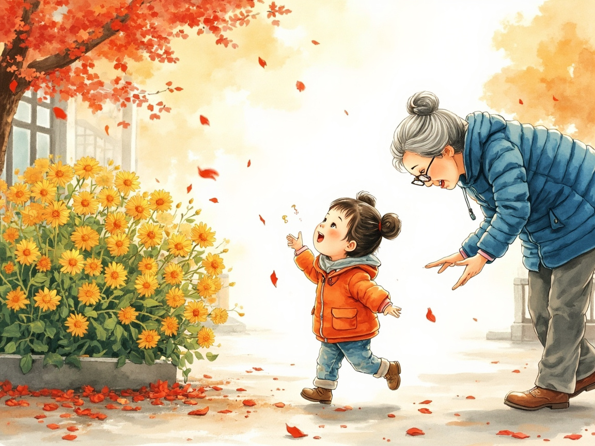
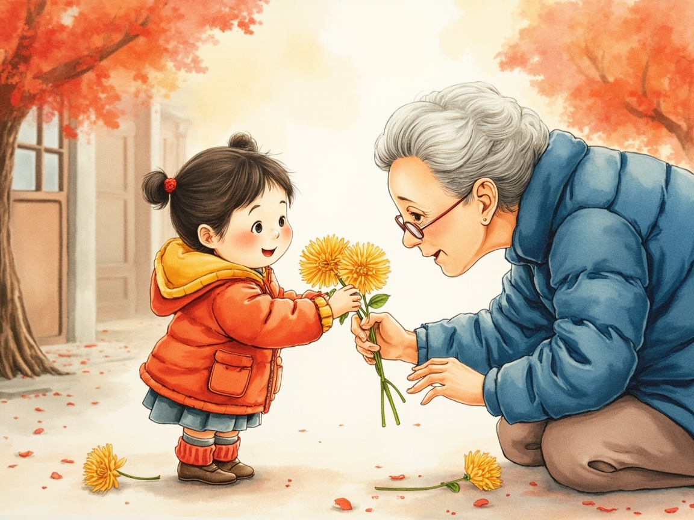
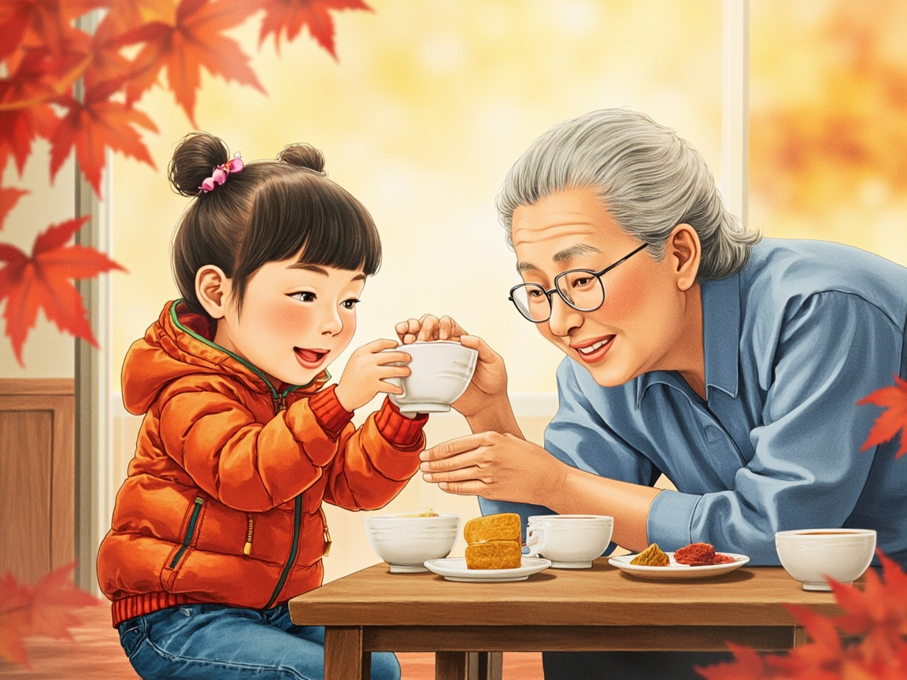
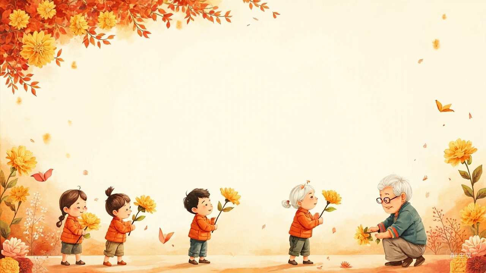
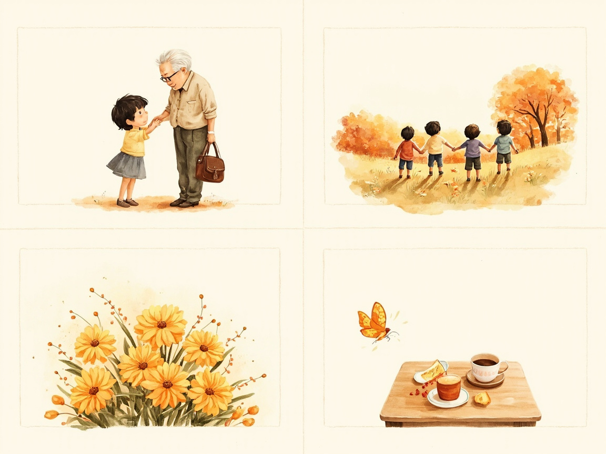

《重阳节，菊花送给你》
小班综合活动教案 · 配套 AI 教具材料（图片 / 绘本 / 动画短片） — 全部由 AI 生成
AI 绘本动画短片《菊花送给你》
15 秒 · 16:9 · 由 MiniMax-H3 视频模型根据三张 AI 绘本插画生成（水彩儿童绘本动画风格，无字幕无文字）。
AI 绘本《菊花送给你》三页

第 1 页：看菊花

第 2 页：送菊花

第 3 页：敬茶、吃重阳糕
主题墙与教学卡片

图 1 重阳节敬老主题墙主视觉

图 6 重阳节四习俗四宫格
图 8 皱纹纸小菊花与祝福卡（手工成品）
关于这些材料
本页面所有插画、绘本、卡片与动画短片均由人工智能生成：图片使用 MiniMax image-01 文生图模型（含 AIGC 水印），动画短片使用 MiniMax H3 视频模型。
用于幼儿园重阳节主题教育活动设计与教学，不含任何真实幼儿影像。